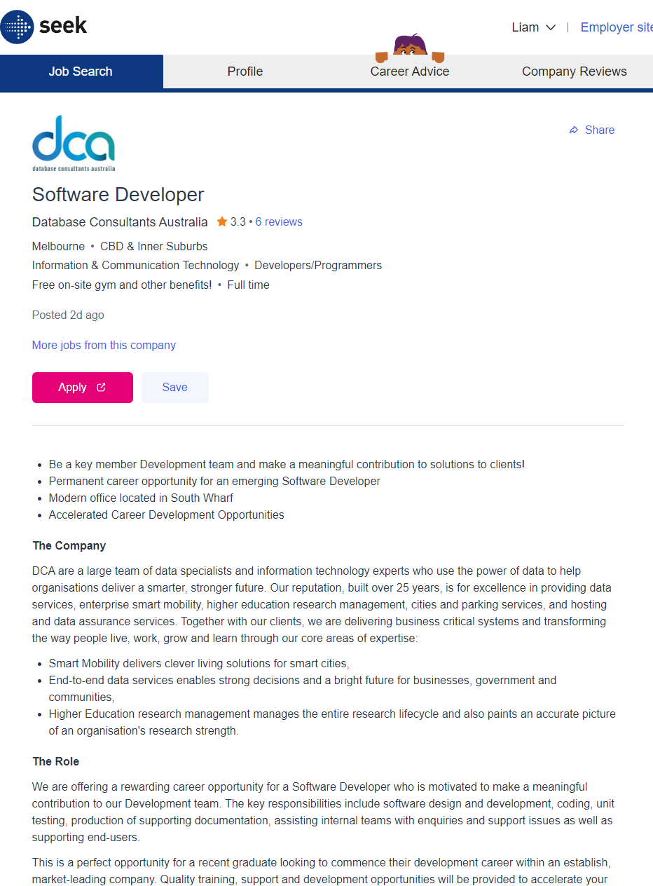
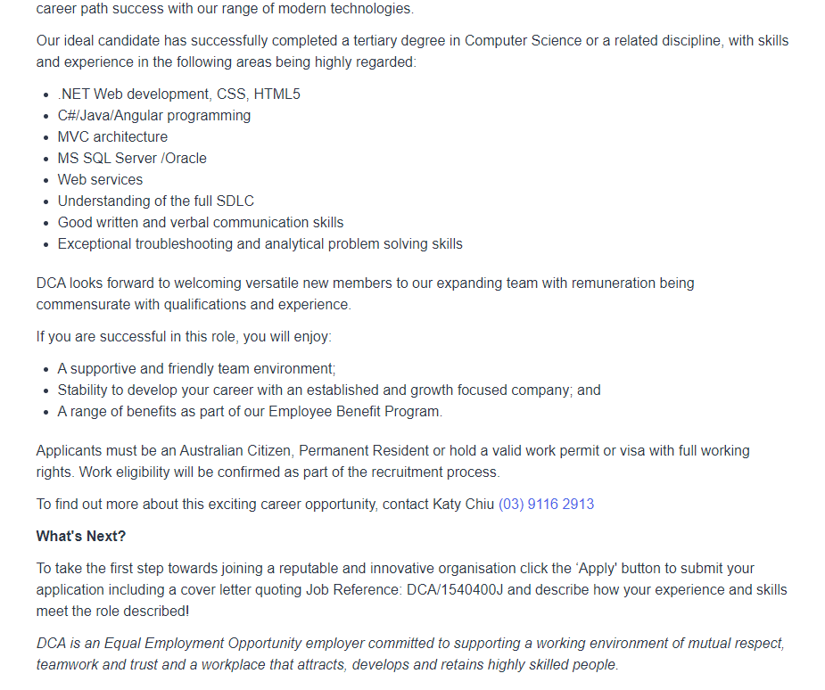

Course: COSC1078
Name: Liam Thomas Bentley
Student ID: s3928558
The position posting is for a Software Developer with Data Consultants Australia at their South Wharf office for a permanent position. The main responsibilities attached to the role software design and development, coding, unit testing, production of supporting documentation, assisting internal teams with enquiries and support issues as well as supporting end-users.Astrong appeal of this software developer position is that the employer (DCA) stipulates:
“This is a perfect opportunity for a recent graduate looking to commence their development career within an establish, market-leading company. Quality training, support and development opportunities will be provided to accelerate your career path success with our range of modern technologies.”
This indicates to me that there is likely a positive workplace culture within the business with good opportunities for career progression for younger employees. My reason for thinking this relates to the difficulty in finding job listings for recent university graduates without previous employment experience, with indicates DCA promotes a progressive culture. The opportunity for dealing with end-users and clients is also an interesting aspect that appeals to me as I want to work in an environment that allows for variance in projects and the day-to-day of the job through human interaction. The position also comes across as a good opportunity for building experience in team projects and collaboration with other developers.
The job listing stipulates that an ideal candidate would have completed a tertiary degree in Computer Science or a
related discipline, with skills and experience in the following areas being highly regarded:
My personal skills in software development are extremely limited due to my recent entrance and interest in pursuing a career in the industry. I have an extremely basic understanding of simple programming languages such as Python, CSS and HTML. Regarding relevant computer programming, I do not hold any current qualifications despite my current enrolment in a Bachelor of Information of Technology at RMIT, though prior to my current course I completed a year of a Bachelor of Commerce at Deakin University. I do not have any relevant work experience to this position.
I plan on angling my future electives towards software development as well as cyber security. I have also been considering transferring to a Bachelor of Computer Science in my second year as it is often considered a desirable qualification by employers in the industry. Primarily though my main goal is to secure an internship as soon as I am given the industry to network and establish connections for future opportunities in the industry. Outside of my plans for my study, I intend to become fluent in all of the essential programming languages over the course of completing my degree as they are absolutely necessary for my desired career path.
 